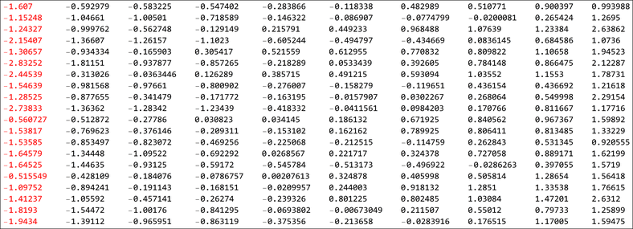
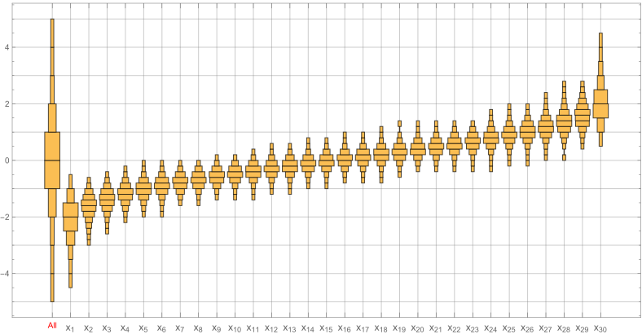
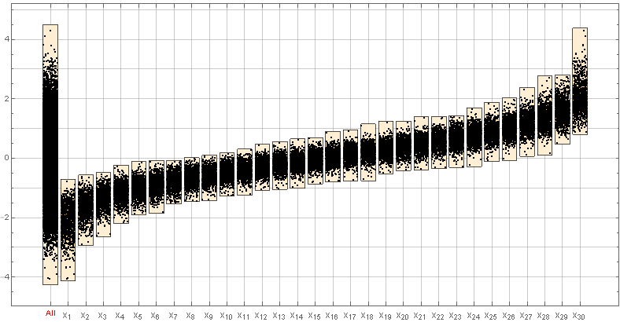
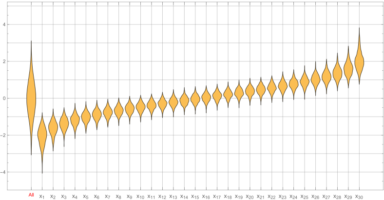
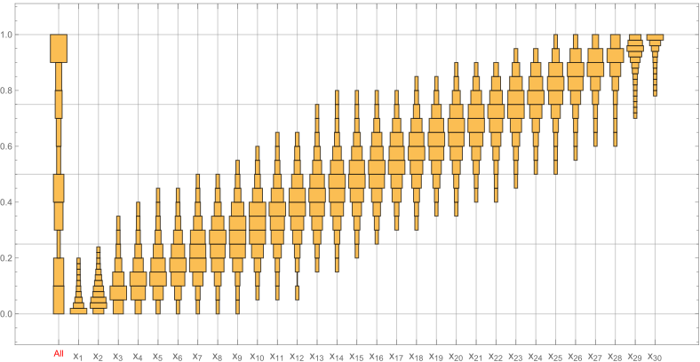
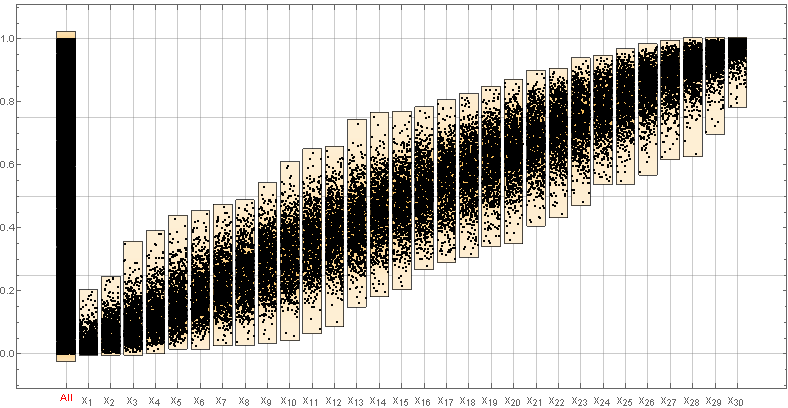
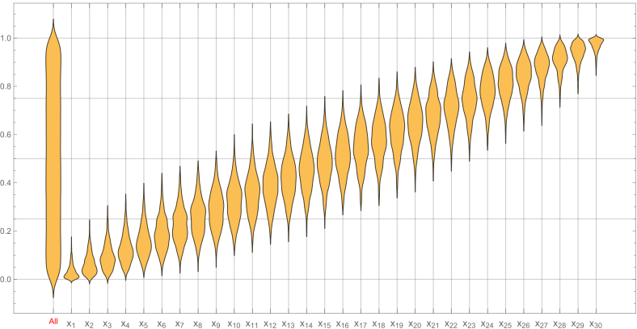

(Order Statistics) Let \(X_{(1)}, ..., X_{(n)}\) be independent and identically distributed continuous random variables with probability distribution \(F\) and density function \(F’(x) = f(x)\). If we let \(X_{(i)}\) denote the \(i_{th}\) smallest of these random variables, then \(X_{(1)}, ..., X_{(n)}\) are called the order statistics. To obtain the distribution of X(i), note that X(i) will be less than or equal to x if and only if at least i of the n random variables \(X_{(1)}, ..., X_{(n)}\) are less than or equal to \(x\).
Putting this problem in another way, let us say you generate a list of random numbers. For the example’s sake let the variate be having a standard normal distribution. Here is a list of 10 random normal numbers. \[\{-1.04703, -0.273997, 0.850384, 0.277371, 1.39499, 1.03797, -0.266823, 0.501695, 0.929459, 0.971281\}\] Now we order the list, \[\{-1.04703, -0.273997, -0.266823, 0.277371, 0.501695, 0.850384, 0.929459, 0.971281, 1.03797, 1.39499\}\]
If we have several of these ordered lists, we are interested in what the density of the distribution of an \(i^{th}\) element from across several lists (or samples) would be. The image below shows the one such list of numbers. Observe that each row is ordered and we take the “similarly ranked” elements and look at their distributions. In the image, we would be taking each column at a time and looking at their distributions. For fitting the table in a single page, I have only taken 10 number per row. In this next section we would see the distributions for different sample sizes.
Unsorted table looks like this
sorted table looks like this
The image below is an animation. It might take a few seconds to load.

Note: All the three images below are showing the same data with a different “ChartElementFunction”
  
The data creation method is the same as explained above for the normal distribution.
  